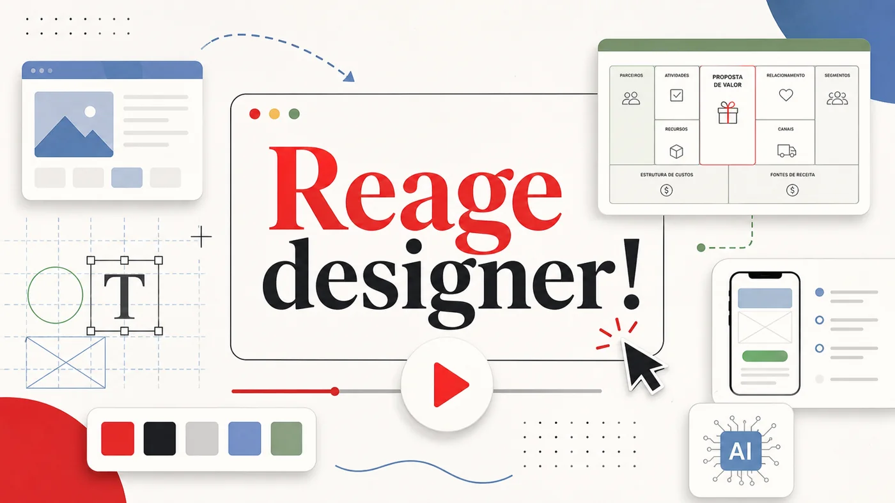

Case de identidade visual para Aristo, plataforma de educação online com IA para curadoria de conteúdo. A referência conecta posicionamento, confiança, tecnologia educacional e linguagem visual amigável para vender uma solução digital complexa.
Acessar fonte original ↗